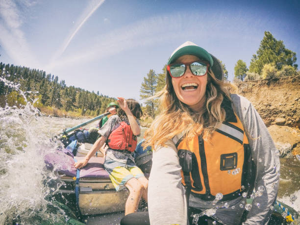
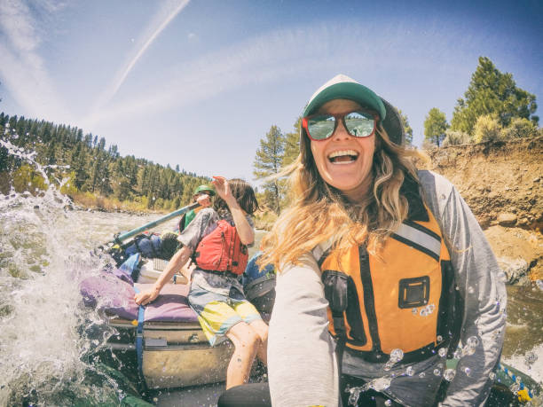

WHITE WATER RAFTING
Embark on an exhilarating white-water rafting journey through some of the most scenic and challenging rivers in the United States! Whether you're a beginner looking for a thrilling experience or an experienced rafter seeking a new challenge, we have the perfect rafting trips for you. Explore the wild beauty of nature, feel the rush of the rapids, and create unforgettable memories. Join us for an adventure of a lifetime!
.jpeg)
history
White water rafting has a long and adventurous history, dating back to the early 19th century. It originated as a means of exploration and transportation, with pioneers navigating rivers like the Snake and Colorado in search of new frontiers. By the 1950s, rafting evolved into a recreational sport, thanks to innovations in inflatable rafts. Today, it’s a thrilling way to explore nature, with popular rafting destinations spanning across the USA, including iconic rivers like the Colorado, American, and Gauley Rivers.
adventure awaits you

.jpeg) 
